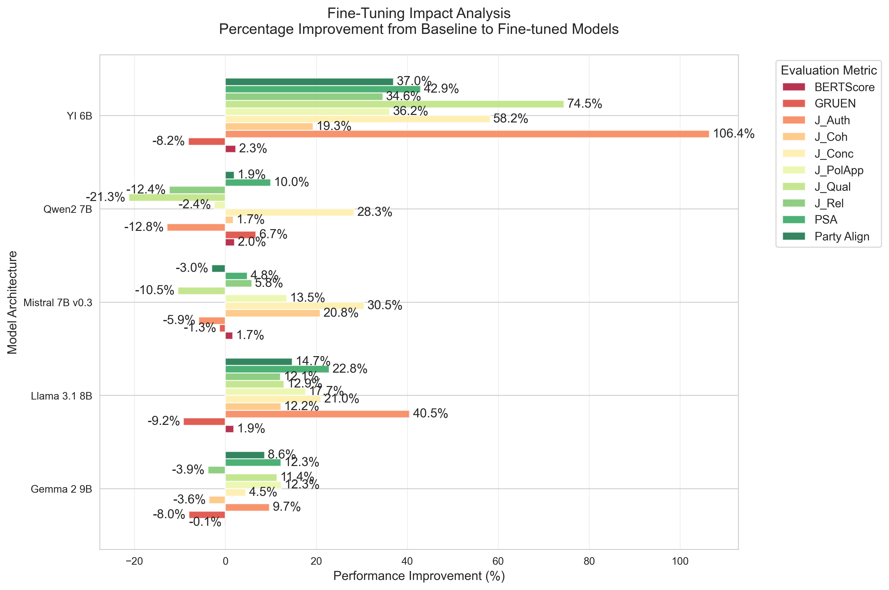
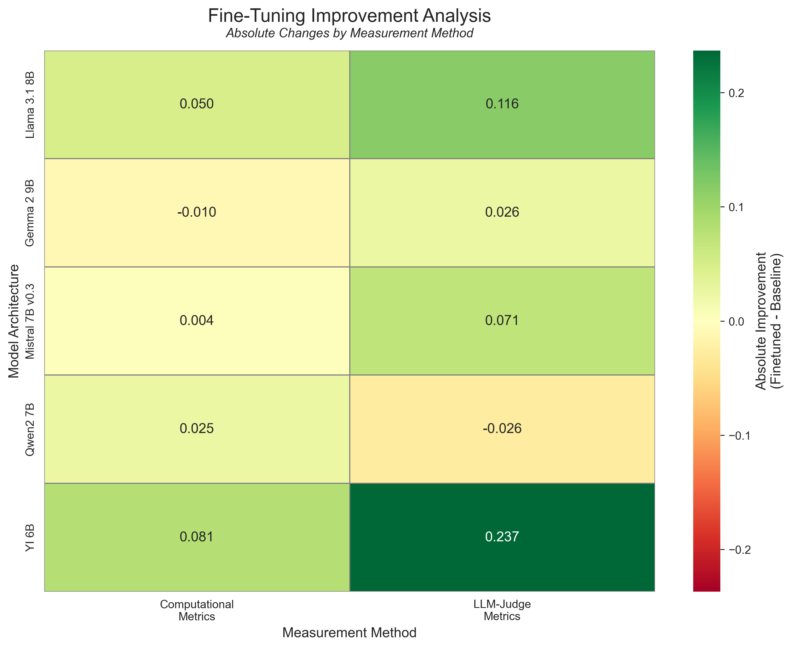
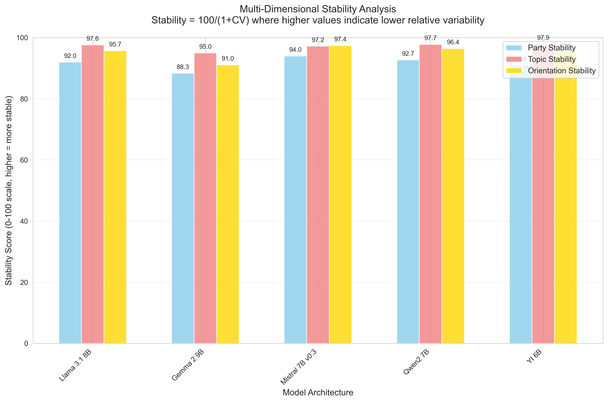
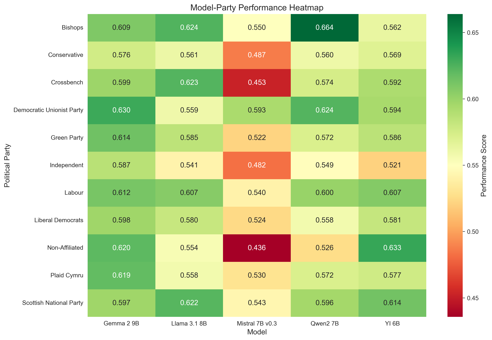
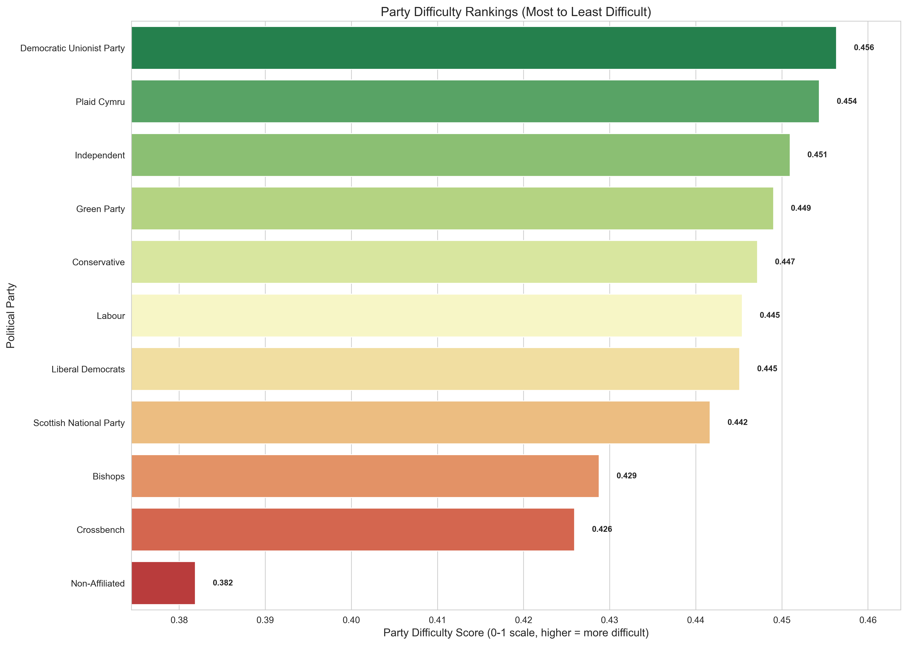
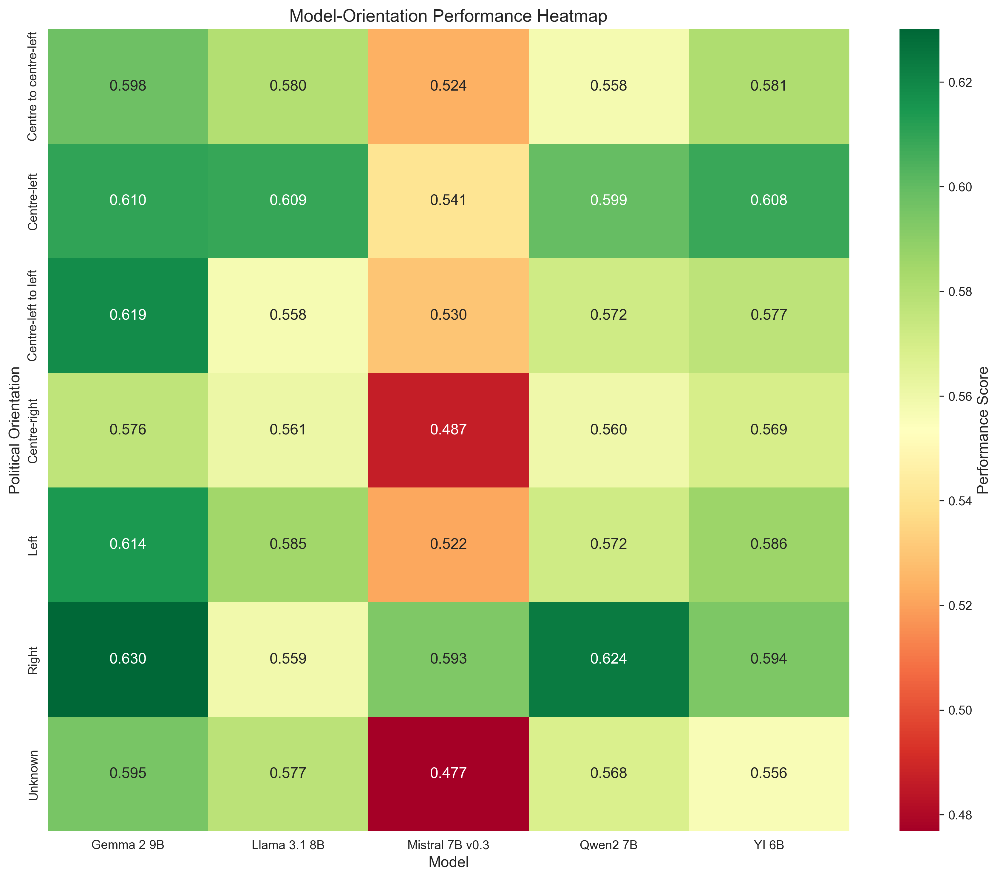
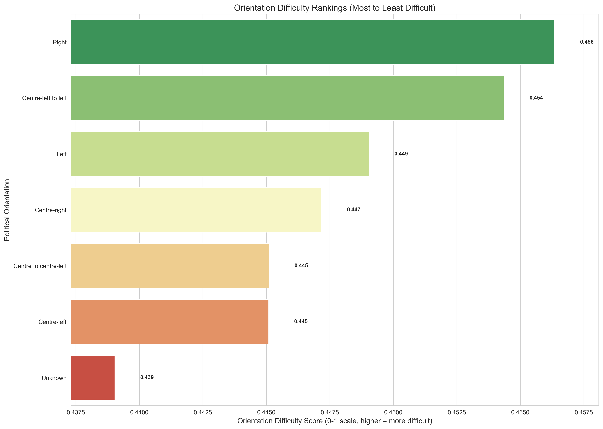
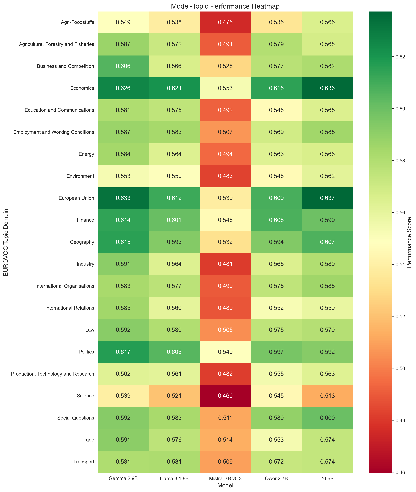
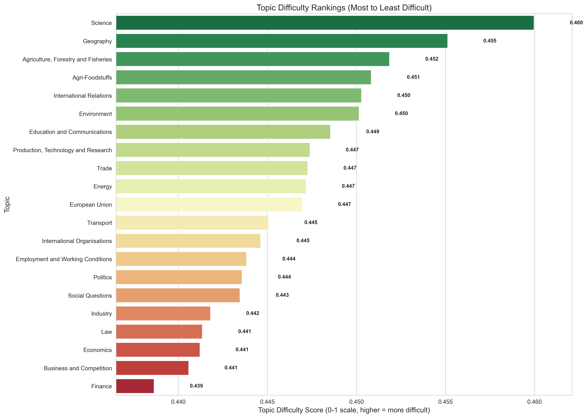

UK Parliamentary Proceedings Dataset (ParlaMint-GB v5.0, 2015–2022)
This project explores political dialogue generation using large language models fine-tuned on UK parliamentary speeches. It encompasses data processing, model selection, fine-tuning with QLoRA, speech generation, and comprehensive evaluation across linguistic, semantic, and political dimensions.
The ParlaMint-GB dataset version 5.0 from CLARIN contains structured UK parliamentary proceedings with comprehensive metadata including speaker information, political affiliations, gender, and complete speech transcripts.
| Party | Political Orientation | Total Speeches | Percentage |
|---|---|---|---|
| Conservative | Centre-right | 263,513 | 58.85% |
| Labour | Centre-left | 108,831 | 24.31% |
| Scottish National Party | Centre-left | 23,562 | 5.26% |
| Liberal Democrats | Centre to centre-left | 23,517 | 5.25% |
| Crossbench | Unknown | 11,878 | 2.65% |
| Democratic Unionist Party | Right | 6,610 | 1.48% |
| Others | Various | 9,867 | 2.20% |
listPerson.xml@from and @to attributes)ParlaMint-listOrg.xmlSpeeches were classified into 21 thematic categories using the EuroVoc taxonomy:
Each training instance contains the following features:
| Statistic | Value |
|---|---|
| Mean words per speech | 223.2 |
| Median words per speech | 99.0 |
| Standard deviation | 278.7 |
| Minimum words | 36 |
| Maximum words | 1,579 |
Five large language models were selected based on their architecture, performance, and compatibility with the UNSLOTH fine-tuning framework. All models use 4-bit quantization for memory efficiency.
| Model | Memory Reduction | Inference Speed |
|---|---|---|
| mistral-7b-v0.3-bnb-4bit | 62% | 2.2× |
| Meta-Llama-3.1-8B-bnb-4bit | 58% | 2.4× |
| gemma-2-9b-bnb-4bit | 58% | 2.2× |
| Qwen2-7B-bnb-4bit | N/A | N/A |
| Yi-1.5-6b-bnb-4bit | N/A | N/A |
Parameter-efficient fine-tuning using 4-bit quantization with low-rank matrix adaptation, enabling efficient model customization without massive computational resources.
| Parameter | Value | Rationale |
|---|---|---|
| LoRA Rank (r) | 16 | Optimal balance for fast fine-tuning |
| LoRA Alpha | 16 | Set equal to rank (α/r = 1) for baseline |
| Target Modules | 7 layers | All linear transformations |
| LoRA Dropout | 0 | Enable Unsloth optimizations |
| Bias Configuration | none | Faster training, reduced memory |
| Parameter | Value | Justification |
|---|---|---|
| Batch Size | 64 | GPU memory optimization |
| Learning Rate | 2e-4 | Standard for LoRA fine-tuning |
| Max Steps | 11,194 | 2 epochs |
| Warmup Steps | 336 | 10% of max steps for stability |
| Optimizer | AdamW | Memory-efficient |
| Weight Decay | 0.01 | Prevents overfitting on political data |
| Max Sequence Length | 1024 | Optimal for dataset median length |
| Scheduler | Linear | Linear learning rate schedule |
A systematic speech generation system that loads trained models and creates political speeches based on structured inputs.
All models received identical generation tasks with realistic distributional characteristics:
| Parameter | Value | Purpose |
|---|---|---|
| Speeches per Model | 2,700 | Comprehensive evaluation dataset |
| Temperature | 0.7 | Balances coherence and variation |
| Top-p (Nucleus Sampling) | 0.85 | Focused yet diverse outputs |
| Repetition Penalty | 1.2 | Prevents redundant phrasing |
| Batch Size | 32 | 3× speed improvement |
| Min Word Count | 43 | P10 threshold for quality |
| Max Word Count | 635 | P90 threshold for quality |
| Max New Tokens | 850 | 1.33× P90 speech length |
9-step validation procedure to ensure quality, coherence, and relevance of generated speeches:
Comprehensive multi-dimensional assessment system evaluating linguistic quality, semantic coherence, political alignment, and overall effectiveness.
Measures how natural the text appears to a language model. Lower scores indicate more human-like, predictable text.
Evaluates lexical diversity by measuring ratio of unique n-grams to total tokens.
Measures similarity between generated texts from the same model to detect repetitive content.
Comprehensive quality metric combining Grammaticality, non-Redundancy, focUs, structurE, and coNherence.
Measures semantic similarity between generated and real speeches using contextualized embeddings.
Computes optimal transport cost between embedding distributions using Earth Mover's Distance.
Measures ideological alignment with expected political orientation (13-point scale from Far-left to Far-right).
Assesses whether speech captures party-specific linguistic characteristics.
Automated assessment using Flow-Judge-v0.1 (3.8B parameters, 4-bit quantization) across six dimensions on a 10-point scale with rubrics for each metric:
| Metric | Evaluation Criteria |
|---|---|
| Coherence | Logical flow, argument connectivity, parliamentary structure |
| Conciseness | Efficient message delivery without excessive verbosity (parliamentary context) |
| Relevance | Direct addressing of prompt/question with complete coverage |
| Authenticity | Natural Westminster discourse vs AI-generated patterns |
| Political Appropriateness | Alignment with party's typical positions and rhetoric |
| Overall Quality | Effectiveness as political communication, argumentation sophistication |

The horizontal bar chart displays percentage improvements from baseline to fine-tuned models across multiple evaluation metrics. Yi 6B shows the most impressive gains, with J_Auth improving by 106.4% and several other metrics showing 30–70% increases. For most models, PSA and Party Align show significant improvement. However, some metrics show decreases, such as GRUEN score and Bert score. The mixed results across metrics highlight that fine-tuning optimizes certain dimensions while potentially compromising others, emphasizing the importance of multi-metric evaluation.

The heatmap displays absolute changes in performance from baseline to fine-tuned models, separated by computational and LLM-judge metrics. Yi 6B demonstrates the strongest improvements across both measurement categories, showing particularly dramatic gains in LLM-judge metrics (0.237). Llama 3.1 8B also shows substantial positive changes (0.116 LLM-judge, 0.050 computational). In contrast, Qwen2 7B exhibits slight negative changes in LLM-judge metrics (−0.026), while Gemma 2 9B shows minimal improvement. The results indicate that LLM-judge metrics are generally more sensitive to fine-tuning effects than computational metrics.

The bar chart presents stability scores calculated as 100/(1 + CV) across three dimensions: Party Stability, Topic Stability, and Orientation Stability for five model architectures. All models achieve remarkably high topic and orientation stability scores (> 91), indicating consistent performance across different subject matters and political orientations. Party stability shows the greatest variation among models, suggesting this dimension is most sensitive to model architecture differences.

Party alignment performance varied substantially across models. Major parties (Conservative, Labour) achieved stable performance across models, benefiting from substantial training data (58.9%,24.3%). Minor parties exhibited greater variability. Mistral struggled with heterogeneous groups (Non-Affiliated: 0.436), while Qwen excelled with ideologically coherent minorities (Bishops: 0.664). Yi demonstrated robust cross-party performance (0.614-0.633). Both new political authenticity metrics (PSA and Party Align) successfully discriminate their target political dimensions. Party Align distinguishes parties while PSA distinguishes orientations (both p < 0.001). Our analysis reveals that Party Align performance depends primarily on data abundance and ideological coherence rather than party size alone. Models successfully learn party-specific language patterns when training data provides clear stylistic signals, indicating targeted data collection for under-represented parties could improve coverage.

Applying cross-context stability analysis, party difficulty scores ranged narrowly (0.382-0.456), with no statistically significant differences. This suggests relatively consistent modeling challenges across parties regardless of size or ideological composition.

Performance across political orientations showed expected patterns. Centrist positions dominated the dataset and achieved higher scores. Model-specific strengths emerged as both Gemma, Yi, Llama and Qwen achieved highest scores on Right positions and Mistral underperformed consistently, indi- cating architectural rather than ideological limitations.

No significant differences between political orientations.

The figure hows model performance across topic domains. Science achieved lowest scores (avg 0.516), while Economics (0.610) and European Union (0.606) showed highest performance.

Science and Geography ranked as most difficult while Finance, Business, and Economics ranked lowest. Technical and natural science domains display higher cross-model disagreement than economic and political topics, consistent with greater terminological specialization and rapidly evolving concepts. In contrast, economic and political discussions employs more stable conceptual frameworks aligned with core parliamentary functions.
Best Overall Performer: Llama 3.1 8B
Most Stable Performer: Gemma 2 9B
Second Best: Yi 1.5 6B
Weakest Performer: Mistral 7B v0.3
Statistically Robust Findings (p < 0.05):
Methodological Contribution: Introduction and validation of Political Spectrum Alignment (PSA) and Party Alignment metrics extends beyond conventional NLP evaluation approaches.
Validation Results:
If you use ParliaBench in your research, please cite:
@misc{ParliaBench2025,
title={ParliaBench: An Evaluation and Benchmarking Framework
for LLM-Generated Parliamentary Speech},
author={Marios Koniaris and Argyro Tsipi and Panayiotis Tsanakas},
year={2025},
eprint={2511.08247},
archivePrefix={arXiv},
primaryClass={cs.CL},
url={https://arxiv.org/abs/2511.08247}
}